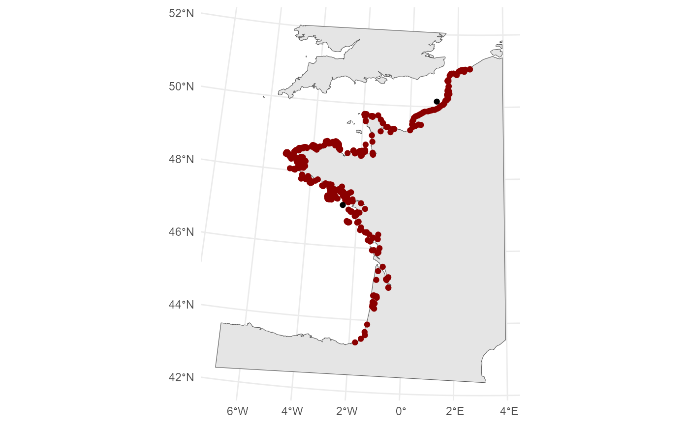
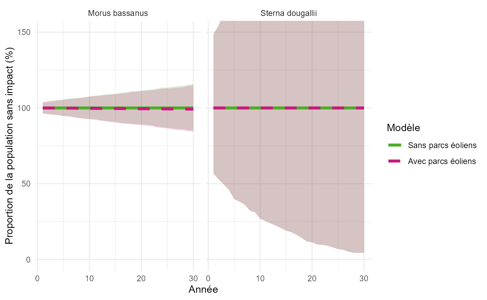
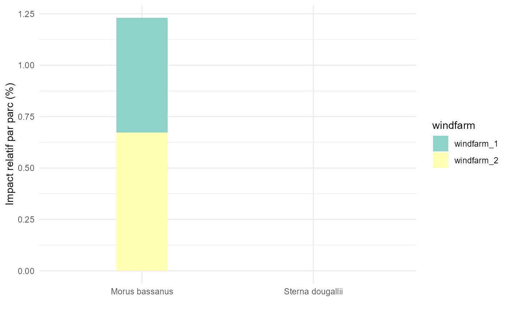

Vignette_Bird_Dynamic.RmdThe R package ‘BirdynamicPkg’ enables modelling the demographic impact of windfarms on seabird species following the methodology developed in the Bird Dynamic project. Check out the ‘Read me’ file to know more.
To run the analyses, you need to prepare data of seabird counts (TO DETAIL GISOM), location of windfarms (spatial data), mortality data from collision with windfarms (which you can calculate using the stochLAB package if you have seabird density estimates around the location of each windfarm, as detailed below). The other data (eg. species demographic parameters) are automatically loaded from the package data, but you can decide to edit them if you have better data or wish to add species that are not included in the package defaults.
TO COME (GISOM for now)
countData <- read.csv2("../../Birdynamic/0.BV_Data_input/BD_Effectifs_clean.csv") %>% subset(., seafront=="atlantique")
colonies_all <- bdy_check_colonies(countData)
countData$colony_code <- colonies_all$colony_code[match(countData$colony,colonies_all$colony)]To run the analyses, parameters of the species of interest have to be included in the following tables. For each of these tables, the default values that we use in the Bird Dynamic Shiny app are included in the package, but you can decide to edit them with different values or adding species.
The table vital_rates includes the survival and
reproduction parameters:
vital_rates <- bdydata_vital_rates
head(vital_rates)
#> species_latin species_fr class age survival fecundity propRepro
#> 1 Alca torda Pingouin torda Juv 0 0.630 0.000 0
#> 2 Alca torda Pingouin torda Imm 1 0.630 0.000 0
#> 3 Alca torda Pingouin torda Imm 2 0.630 0.000 0
#> 4 Alca torda Pingouin torda Imm 3 0.941 0.000 0
#> 5 Alca torda Pingouin torda Adu >3 0.927 0.543 1
#> 6 Chlidonias niger Guifette noire Juv 0 0.440 0.000 0The table foraging_ranges includes the foraging range of
each species:
foraging_ranges <- bdydata_foraging_ranges
head(foraging_ranges)
#> species_latin species_fr max_km mean_max_km sd_mean_max
#> 1 Somateria mollissima Eider à duvet 22.5 21.5 NA
#> 2 Gavia stellata Plongeon catmarin 9.0 9.0 NA
#> 3 Hydrobates pelagicus Océanite tempête 336.0 336.0 NA
#> 4 Hydrobates leucorhous Océanite cul-blanc NA NA NA
#> 5 Fulmarus glacialis Fulmar boréal 2736.0 542.3 657.9
#> 6 Puffinus puffinus Puffin des Anglais 2890.0 1346.8 1018.7
#> mean_km sd_mean category confidence terrestrial_habits
#> 1 3.2 4.2 Indirect Poor FALSE
#> 2 4.5 NA Direct Low FALSE
#> 3 NA NA Direct Poor FALSE
#> 4 657.0 NA Direct Moderate FALSE
#> 5 134.6 90.1 Direct Good FALSE
#> 6 136.1 88.7 Direct Moderate FALSEThe table seasons includes the presence of each species
at each month (see help(bdydata_seasons) to see details on
attributes):
seasons <- bdydata_seasons
head(seasons)
#> species_latin species_fr species_en Jan Feb Mar
#> 1 Morus bassanus Fou de Bassan Northern gannet M M T
#> 2 Larus marinus Goéland marin Great black backed gull M M T
#> 3 Rissa tridactyla Mouette tridactyle Black legged kittiwake M M T
#> 4 Gulosus aristotelis Cormoran huppé European shag R R B
#> 5 Larus fuscus Goéland brun Lesser black backed gull V V T
#> 6 Larus argentatus Goéland argenté Herring gull M M T
#> Apr May Jun Jul Aug Sep Oct Nov Dec
#> 1 B B B B B B T M M
#> 2 B B B B B R T M M
#> 3 B B B B B T M M M
#> 4 B B B B B B R R R
#> 5 B B B B R T T V V
#> 6 B B B B T T M M MMortality can be either calculated using the stochLAB
package or directly loaded if they were calculated previously.
To create them with the stoch_crm() function from the
stochLAB package, you must define the density of your
species for each windfarm and month, and all the windfarm and seabird
parameters. The values entered below are only for the example, do not
consider them as verified default values.
dens_dt <- data.frame(
row.names = month.name,
month=month.name,
mean=c(5,5,5,10,10,10,10,10,10,5,5,5),
sd=0
)
chord_profile <- data.frame(
pp_radius=seq(0, 1, by=0.05),
chord=c(0.69, 0.73, 0.79, 0.88, 0.96, 1, 0.98, 0.92, 0.85, 0.8, 0.75, 0.7, 0.64, 0.58, 0.52, 0.47, 0.41, 0.37, 0.3, 0.24, 0)
)
n_iterations <- 1000
morta_results <- stoch_crm(
model_options = "1",
n_iter = n_iterations,
flt_speed_pars = data.frame("mean"=0.1, "sd"=0),
body_lt_pars = data.frame("mean"=0.1, "sd"=0),
wing_span_pars = data.frame("mean"=0.1, "sd"=0),
avoid_bsc_pars = data.frame("mean"=0.99, "sd"=0),
avoid_ext_pars = NULL,
noct_act_pars = data.frame("mean"=0.2, "sd"=0),
prop_crh_pars = data.frame("mean"=0.5,"sd"=0),
bird_dens_opt = "tnorm",
bird_dens_dt = dens_dt,
flight_type = "flapping",
prop_upwind = 0.5,
n_blades = 3,
air_gap_pars = data.frame("mean"=30,"sd"=0),
rtr_radius_pars = data.frame("mean"=80, "sd"=0),
bld_width_pars = data.frame("mean"=5.5,"sd"=0),
bld_chord_prf = chord_profile,
rtn_pitch_opt = "probDist",
bld_pitch_pars = data.frame("mean"=2, "sd"=0.1),
rtn_speed_pars = data.frame("mean"=10, "sd"=0.5),
trb_wind_avbl = cbind(data.frame("month"=month.name),"pctg"=rep(95, 12)),
trb_downtime_pars = cbind(data.frame("month"=month.name), "mean"=rep(6, 12), "sd"=rep(2, 12)),
wf_n_trbs = 50,
wf_width = 5,
wf_latitude = 48.67,
tidal_offset = 2,
lrg_arr_corr = T,
out_format = "draws",
out_sampled_pars = FALSE,
out_period = "months",
season_specs = NULL,
verbose = TRUE,
log_file = NULL,
seed = NULL
)
morta_format <- data.frame("espece_latin"="Larus fuscus",
"parc"="parc_1",
"mois"=rep(1:12, n_iterations),
"iteration"=rep(1:n_iterations, each=12),
"coefficient"=as.vector(t(morta_results[["opt1"]]))
)
head(morta_format)
#> espece_latin parc mois iteration coefficient
#> 1 Larus fuscus parc_1 1 1 17.32526
#> 2 Larus fuscus parc_1 2 1 16.69770
#> 3 Larus fuscus parc_1 3 1 20.37485
#> 4 Larus fuscus parc_1 4 1 42.15468
#> 5 Larus fuscus parc_1 5 1 44.47484
#> 6 Larus fuscus parc_1 6 1 50.08019Alternatively, mortality data that were compiled previously can be
directly loaded, as long as they are formatted as in
bdydata_mortality_example (which we will use in this
vignette):
formatted_mortality <- bdy_check_mortality(bdydata_mortality_example, bdydata_mortality_example$espece_latin)$table
formatted_mortality$parc <- bdy_clean_names(formatted_mortality$parc) # TO INTEGRATE DIRECTLY IN CHECK MORTALITY FUNCTION!!!!!!!!!!!!!
head(formatted_mortality)
#> species_latin parc mois iteration coefficient
#> 1 Morus bassanus parc_1 1 1 0.1308654
#> 2 Morus bassanus parc_1 2 1 0.1191316
#> 3 Morus bassanus parc_1 3 1 0.5197185
#> 4 Morus bassanus parc_1 4 1 0.9205076
#> 5 Morus bassanus parc_1 5 1 0.2392284
#> 6 Morus bassanus parc_1 6 1 0.4535329Windfarm data must be provided to run the analyses, as a sf object
(see help(st_read) for more details) using either points or
polygons, projected in Lambert93 (EPSG:2154). As an example, we here use
the bdydata_parc_example data included in the package and
we apply the bdy_clean_names() function to the NAME column
(to remove spaces and capital and ensure it matches with names in
mortality data). They must include a column indicating the seafront (for
France, it can be ‘atlantique’ or ‘mediterranee’); this also has to be
added as a column to the colony file.
windfarms_L93 <- bdydata_parcs_example %>% st_transform(., st_crs(2154))
windfarms_L93$NAME <- bdy_clean_names(windfarms_L93$NAME)
windfarms_L93$seafront <- "atlantique"
windfarms_L93
#> Simple feature collection with 2 features and 2 fields
#> Geometry type: POINT
#> Dimension: XY
#> Bounding box: xmin: 275871.3 ymin: 6688191 xmax: 565570.9 ymax: 7007269
#> Projected CRS: RGF93 v1 / Lambert-93
#> NAME geometry seafront
#> 1 parc_1 POINT (275871.3 6688191) atlantique
#> 2 parc_2 POINT (565570.9 7007269) atlantique
colonies_all$seafront <- "atlantique"If you don’t have a shapefile ready, you can also create the sf object from coordinates using the following function
windfarms_bis <- st_as_sf(data.frame(lon=c(3.214, 3.606, 5.026), lat=c(43.118, 43.283, 43.292), NAME=c("W1", "W2", "P3")), coords = c("lon","lat"), crs=st_crs(4326)) %>% st_transform(., st_crs(2154))ADD Check mortality names
A map of coastline is needed to create a cost matrix to calculate distance by sea, and to calculate the proportion of sea area around each colonies. We use data stored in the package and crop based on the location of colonies.
crop_extent <- colonies_all %>% st_bbox() %>% st_as_sfc() %>% st_buffer(., 100000) %>% st_transform(., 4326)
countryShape <- bdydata_world_map %>%
st_crop(., crop_extent) %>%
st_transform(., st_crs(colonies_all))
ggplot()+
geom_sf(data=countryShape)+
geom_sf(data=colonies_all, col="darkred")+
geom_sf(data=windfarms_L93, fill="black")+
theme_minimal()
Before running the analyses, we need to check that all required data
are loaded. This is done by the function
bdy_check_alldata() that will either return a message
saying all data are good, or an error.
bdy_check_alldata(windfarms_L93, formatted_mortality, colonies_all, countData, vital_rates, seasons, foraging_ranges, countryShape)
#> [1] "All required datasets are loaded and valid"We calculate two types of distance: euclidian distance is used for
species that cross land (e.g., gulls), shortest sea path is used for
purely marine species (e.g., Northern Gannet). Both distances are
calculated for all colonies (if doShpa is set to TRUE) with the
bdy_get_distances() function, the type of distance to use
then depends on species later in the analysis. Before calculating
distances, a cost matrix based on coastline must be calculated with the
bdy_get_cost_raster().
cost_matrix <- bdy_get_cost_raster(colonies_all)
#> [1] "Starting seafront atlantique"
all_distances <- bdy_get_distances(colonies=colonies_all,
windfarms = windfarms_L93,
costMatrix=cost_matrix,
doShpa = T)
head(all_distances$eucl_dist)
#> Units: [km]
#> parc_1 parc_2
#> colo_001 150.8575 461.9967
#> colo_002 118.6204 459.6309
#> colo_003 119.4212 459.6702
#> colo_004 118.6062 460.0103
#> colo_005 127.0376 459.7388
#> colo_006 121.0119 460.3043
head(all_distances$shpa_dist)
#> Units: [km]
#> parc_1 parc_2
#> colo_001 163.7939 909.2590
#> colo_002 124.9949 632.7716
#> colo_003 125.9949 631.7716
#> colo_004 124.5807 633.1859
#> colo_005 132.8944 624.8721
#> colo_006 127.4092 630.3574The next steps of the analysis are applied species by species. In this vignette, we show a detailed example for one species, followed by how you can loop the analysis for multiple species.
For this example, we will select the Northern Gannett (Morus
bassanus) and process count data. The processing step includes
an important step, which is to cluster close colonies (reported in the
column group).
sp <- "Morus bassanus"
count_processed <- bdy_process_count_data(sp=sp,
countData=countData,
colonies=colonies_all,
first_year = 2009,
last_year = 2021,
max_foraging_range_km =foraging_ranges$max_km[which(foraging_ranges$species_latin==sp)]
)The first step to apply is the apportionning, where mortalities due to collisions with wind turbines (modelled or loaded earlier in the pipeline) are attributed to the different colonies depending on their distance to the windfarms or the configuration of the coastline.
We first set the distance between windfarms and colonies that include the selected species, keeping the shortest sea path if the species is purely marine, the euclidian distance otherwise.
if(foraging_ranges$terrestrial_habits[foraging_ranges$species_latin==sp]){
distances <- all_distances$eucl_dist
}else{
distances <- all_distances$shpa_dist
}
distances <- distances[rownames(distances) %in% count_processed$colonies_sp$colony_code,]We can then calculate the proportion of sea area around each colony, which is used in the apportionning step to account for the higher density of individuals at sea if the proportion of sea area around a colony is low (as the species is not using the terrestrial habitat).
sea_area <- bdy_calculate_sea_area(max_foraging_range = foraging_ranges$max_km[which(foraging_ranges$species_latin==sp)],
colonies=count_processed$colonies_sp
)
head(sea_area)
#> colo_852 colo_075
#> 0.9749742 0.9749742We can now apply the [bdy_apportionning()] function to run the
apportionning calculations to set how mortality data should be
distributed among colonies. The output includes absolute and relative
weights at both colony and group of colonies scales. The value used to
split mortality data in bdy_process_mortality is the
relative weight of mortality between the windfarms for each group of
colonies (RW_group).
apportionning <- bdy_apportionning(max_foraging_range_km = foraging_ranges$max_km[which(foraging_ranges$species_latin==sp)],
colonies = count_processed$colonies_sp,
sea_area = sea_area,
tbl_dist = distances
)
print(apportionning$RW_group)
#> parc_1 parc_2
#> 1 4.434376e-05 0.0004569353
#> 2 9.999557e-01 0.9995430647This table can then be used in the [bdy_process_mortality()] that distributes national mortality data among all colonies of a given species.
morta_iter_group <- bdy_process_mortality(
collision = formatted_mortality,
season=seasons[which(seasons$species_latin==sp),][-1],
n_iteration = 1000,
RW_group = apportionning$RW_group
)In this step, we will create the demographic model that estimates species trends if there were no collisions with windfarms. Note that these trends are not expected to be very accurate on their own as the demographic models are quite simple, they are only meant to be used in comparison with the model with collisions.
no_impact_output <- bdy_model_no_impact(count_data = count_processed$group_counts_sp,
PI = count_processed$ppa_yr_sp,
survival = vital_rates[vital_rates$species_latin == sp, "survival"],
fecundity = vital_rates[vital_rates$species_latin == sp, "fecundity"],
propRepro = vital_rates[vital_rates$species_latin == sp, "propRepro"],
modelFile="C:/Users/TERRA/Documents/Projects/Birdynamic/app/0.Data/model_01.txt",
nimble=T)
#> Warning: R object of different size than NimArrDouble. R obj has size 1 but NimArrDbl has size 43.
#> warning: logProb of data node y[1, 6]: logProb less than -1e12.
#> warning: logProb of data node y[2, 6]: logProb less than -1e12.
#> warning: logProb of data node y[1, 7]: logProb less than -1e12.
#> warning: logProb of data node y[2, 7]: logProb less than -1e12.
#> warning: logProb of data node y[1, 8]: logProb less than -1e12.
#> warning: logProb of data node y[2, 8]: logProb less than -1e12.
#> warning: logProb of data node y[1, 12]: logProb less than -1e12.
#> warning: logProb of data node y[2, 12]: logProb less than -1e12.
#> warning: logProb of data node y[1, 13]: logProb less than -1e12.
#> warning: logProb of data node y[2, 13]: logProb less than -1e12.
#> |-------------|-------------|-------------|-------------|
#> |-------------------------------------------------------|
#> Warning: R object of different size than NimArrDouble. R obj has size 1 but NimArrDbl has size 43.
#> |-------------|-------------|-------------|-------------|
#> |-------------------------------------------------------|
#> Warning: R object of different size than NimArrDouble. R obj has size 1 but NimArrDbl has size 43.
#> |-------------|-------------|-------------|-------------|
#> |-------------------------------------------------------|The output includes initial population counts and a growth parameter for each group of colonies and iterations.
We will now create the model with impact from collisions with windfarms by applying the mortalities processed in the apportionning step to the demographic trends estimated with the model with no impact.
with_impact_output <- bdy_model_with_impact(n_group=nlevels(count_processed$colonies_sp$group),
ny_data=ncol(count_processed$group_counts_sp),
posterior=no_impact_output,
mortality=morta_iter_group
)
with_impact_output$sc1[,,1]
#> [,1] [,2] [,3] [,4] [,5] [,6] [,7] [,8] [,9] [,10] [,11] [,12]
#> [1,] 66 68 67 76 68 69 76 79 88 75 69 62
#> [2,] 52184 51994 51709 51371 50821 50568 50103 49614 49323 49722 49579 49437
#> [,13] [,14] [,15] [,16] [,17] [,18] [,19] [,20] [,21] [,22] [,23] [,24]
#> [1,] 46 61 58 60 63 50 46 47 49 57 63 66
#> [2,] 49121 48820 48293 47733 47207 46669 46663 46688 46475 46476 46097 45447
#> [,25] [,26] [,27] [,28] [,29] [,30]
#> [1,] 69 67 62 67 68 66
#> [2,] 45067 44745 44489 43981 43744 43474The output includes two lists: sc0 (which includes the counts with no impact from windfarms) and sc1 (counts with impact from windfarms). Each of these lists includes 1000 tables (if the number of iterations was set to 1000), with count estimates for the 30 years of projected demography (as columns) and each group of colonies (as rows).
Results can be compiled from the previous outputs using the function
bdy_raw_res_tables(), which will create 3 result tables,
that will be used in all the functions used to display results.
Model_output <- list(
SP = list(
no_impact=with_impact_output$sc0,
with_impact=with_impact_output$sc1,
colonies=count_processed$colonies_sp,
mortality=morta_iter_group,
distance=round(distances)
)
)
names(Model_output)[1] <- sp
result_table <- bdy_raw_res_tables(mod_out=Model_output)First, the table Simulated_National includes estimated
counts per year and per iteration with or without impact. It is used to
plot and compare future trends.
result_table$Simulated_National
#> # A tibble: 30,000 × 6
#> # Groups: Species, Year, Iteration [30,000]
#> Species Year Iteration Sum_PopInit Sum_noimpact Sum_withimpact
#> <chr> <int> <int> <dbl> <dbl> <dbl>
#> 1 Morus bassanus 1 1 52250 52250 52250
#> 2 Morus bassanus 1 2 52092 52092 52092
#> 3 Morus bassanus 1 3 50221 50221 50221
#> 4 Morus bassanus 1 4 52416 52416 52416
#> 5 Morus bassanus 1 5 50412 50412 50412
#> 6 Morus bassanus 1 6 51471 51471 51471
#> 7 Morus bassanus 1 7 51959 51959 51959
#> 8 Morus bassanus 1 8 53104 53104 53104
#> 9 Morus bassanus 1 9 51668 51668 51668
#> 10 Morus bassanus 1 10 51138 51138 51138
#> # ℹ 29,990 more rowsSecond, the table Tableau_National includes the relative
impact and the increase in probability of extinction for each species at
national level. Relative impact was calculated for each iteration as
100*(C0-C1)/C0where C0 is the estimated
abundance of the species after 30 years without
windfarm impact and C1 is the estimated abundance of the
species after 30 years with windfarm impact (the median
across simulations is provided, as well as the confidence interval).
Increase in extinction probability is calculated as
100*(P1-P0) where P0 is the probability of extinction
without windfarm impact (calculated as the proportion
of simulations that reach counts of 0 after 30 years) and P1 is the
probability of extinction with windfarm impact.
as.data.frame(result_table$Tableau_National)
#> Species Pop_Init_med Pop_Init_2.5 Pop_Init_97.5 Mortality_med
#> 1 Morus bassanus 51670 49850 53519 12.70028
#> Mortality_2.5 Mortality_97.5 RelImpact_med RelImpact_2.5 RelImpact_97.5
#> 1 6.922283 22.6581 0.7110733 0.3845961 1.249471
#> Ext_Noimpact Ext_Withimpact Ext_Relative
#> 1 0 0 0Third, the table Tableau_Subpop includes the same
results as Tableau_National but for each group of
colonies.
as.data.frame(result_table$Tableau_Subpop)
#> Species GrColo Pop_Init_med Pop_Init_2.5 Pop_Init_97.5 Trend_no_med
#> 1 Morus bassanus 1 338 43 985 -0.2774794
#> 2 Morus bassanus 2 51279 49501 53020 -0.1964387
#> Trend_no_2.5 Trend_no_97.5 Trend_impact_med Trend_impact_2.5
#> 1 -0.8486495 0.46584916 -0.2776949 -0.8486495
#> 2 -0.2950475 -0.08957216 -0.2025820 -0.3001387
#> Trend_impact_97.5 Mortality_med Mortality_2.5 Mortality_97.5 Parc_proche
#> 1 0.46584916 0.003039419 0.001489466 0.007965704 parc_2 (194km)
#> 2 -0.09683196 12.696793302 6.920424330 22.649536999 parc_1 (371km)
#> RelImpact_med RelImpact_2.5 RelImpact_97.5 Ext_Noimpact Ext_Withimpact
#> 1 0.000000 0.0000000 0.4830544 0.006 0.006
#> 2 0.714283 0.3857558 1.2522340 0.000 0.000
#> Ext_Relative
#> 1 0
#> 2 0The same analysis can be run using the grouped function
bdy_run_analysis, which includes the steps described in the
previous section, and allowing running the analysis for multiple
species.
#> [1] "Starting seafront atlantique"
#> Warning: R object of different size than NimArrDouble. R obj has size 1 but NimArrDbl has size 43.
#> |-------------|-------------|-------------|-------------|
#> |-------------------------------------------------------|
#> Warning: R object of different size than NimArrDouble. R obj has size 1 but NimArrDbl has size 43.
#> |-------------|-------------|-------------|-------------|
#> |-------------------------------------------------------|
#> Warning: R object of different size than NimArrDouble. R obj has size 1 but NimArrDbl has size 43.
#> |-------------|-------------|-------------|-------------|
#> |-------------------------------------------------------|
#> Warning: R object of different size than NimArrDouble. R obj has size 1 but NimArrDbl has size 43.
#> warning: logProb of data node y[1, 12]: logProb less than -1e12.
#> warning: logProb of data node y[1, 13]: logProb less than -1e12.
#> warning: logProb of data node y[2, 13]: logProb less than -1e12.
#> warning: logProb of data node y[3, 13]: logProb less than -1e12.
#> warning: logProb of data node y[4, 13]: logProb less than -1e12.
#> |-------------|-------------|-------------|-------------|
#> |-------------------------------------------------------|
#> Warning: R object of different size than NimArrDouble. R obj has size 1 but NimArrDbl has size 43.
#> |-------------|-------------|-------------|-------------|
#> |-------------------------------------------------------|
#> Warning: R object of different size than NimArrDouble. R obj has size 1 but NimArrDbl has size 43.
#> |-------------|-------------|-------------|-------------|
#> |-------------------------------------------------------|
#> Warning: R object of different size than NimArrDouble. R obj has size 1 but NimArrDbl has size 43.
#> warning: logProb of data node y[3, 9]: logProb less than -1e12.
#> warning: logProb of data node y[5, 9]: logProb less than -1e12.
#> warning: logProb of data node y[3, 10]: logProb less than -1e12.
#> warning: logProb of data node y[3, 11]: logProb less than -1e12.
#> warning: logProb of data node y[5, 11]: logProb less than -1e12.
#> warning: logProb of data node y[7, 11]: logProb less than -1e12.
#> warning: logProb of data node y[1, 12]: logProb less than -1e12.
#> warning: logProb of data node y[2, 12]: logProb less than -1e12.
#> warning: logProb of data node y[3, 12]: logProb less than -1e12.
#> warning: logProb of data node y[4, 12]: logProb less than -1e12.
#> warning: logProb of data node y[5, 12]: logProb less than -1e12.
#> warning: logProb of data node y[6, 12]: logProb less than -1e12.
#> warning: logProb of data node y[7, 12]: logProb less than -1e12.
#> warning: logProb of data node y[1, 13]: logProb less than -1e12.
#> warning: logProb of data node y[2, 13]: logProb less than -1e12.
#> warning: logProb of data node y[3, 13]: logProb less than -1e12.
#> warning: logProb of data node y[4, 13]: logProb less than -1e12.
#> warning: logProb of data node y[5, 13]: logProb less than -1e12.
#> warning: logProb of data node y[6, 13]: logProb less than -1e12.
#> warning: logProb of data node y[7, 13]: logProb less than -1e12.
#> |-------------|-------------|-------------|-------------|
#> |-------------------------------------------------------|
#> Warning: R object of different size than NimArrDouble. R obj has size 1 but NimArrDbl has size 43.
#> |-------------|-------------|-------------|-------------|
#> |-------------------------------------------------------|
#> Warning: R object of different size than NimArrDouble. R obj has size 1 but NimArrDbl has size 43.
#> |-------------|-------------|-------------|-------------|
#> |-------------------------------------------------------|Whether models were run using the individual functions or the grouped function, the package includes functions to display the different results, following the outputs displayed in the Bird Dynamic Shiny app.
First, you can create a pretty table including all the main results at national scale or at the scale of group of colonies:
bdy_pretty_result_table(result_table, type="national")
#> # A tibble: 3 × 7
#> # Groups: Espece [3]
#> Espece Population_initiale Nombre_collisions Impact_Relatif
#> <chr> <chr> <chr> <chr>
#> 1 Morus bassanus 51594 [49765-53525] 12.9 [7.07-24.24] 0.72% [0.4-1.36]
#> 2 Sterna dougallii 234 [139-356] 0 [0-0] 0% [0-0]
#> 3 Uria aalge 3043 [2783-3313] 0 [0-0] 0% [0-0]
#> # ℹ 3 more variables: Augmentation_Extinction <chr>, MAX_Impact_relatif <chr>,
#> # MAX_Augmentation_extinction <dbl>
bdy_pretty_result_table(result_table, type="subpop")
#> # A tibble: 13 × 7
#> # Groups: Espece, Groupe_colonies [13]
#> Espece Groupe_colonies Parc_proche Population_initiale Nombre_collisions
#> <chr> <int> <chr> <chr> <chr>
#> 1 Morus bass… 1 parc_2 (19… 340 [34-1032] 0 [0-0.01]
#> 2 Morus bass… 2 parc_1 (37… 51201 [49448-53148] 12.89 [7.07-24.2…
#> 3 Sterna dou… 1 parc_2 (14… 22 [3-63] 0 [0-0]
#> 4 Sterna dou… 2 parc_1 (37… 21 [2-62] 0 [0-0]
#> 5 Sterna dou… 3 parc_2 (32… 19 [3-46] 0 [0-0]
#> 6 Sterna dou… 4 parc_1 (34… 17 [7-44] 0 [0-0]
#> 7 Sterna dou… 5 parc_2 (36… 35 [10-66] 0 [0-0]
#> 8 Sterna dou… 6 parc_1 (24… 14 [2-46] 0 [0-0]
#> 9 Sterna dou… 7 parc_1 (12… 96 [52-148] 0 [0-0]
#> 10 Uria aalge 1 parc_1 (37… 390 [287-491] 0 [0-0]
#> 11 Uria aalge 2 parc_2 (35… 2506 [2303-2704] 0 [0-0]
#> 12 Uria aalge 3 parc_1 (22… 59 [8-167] 0 [0-0]
#> 13 Uria aalge 4 parc_1 (19… 76 [13-187] 0 [0-0]
#> # ℹ 2 more variables: Impact_Relatif <chr>, Augmentation_Extinction <chr>Second, you can see relative trends with and without impact:
bdy_plot_trends(result_table)
Third, you can obtain an interactive map summarising the results:
leafmap <- bdy_plot_map(mod_outputs, result_table, windfarms_L93)
leafmap
#htmlwidgets::saveWidget(leafmap, "Interactive_map_results_Bird_Dynamic.html")Fourth, you can obtain a plot summarising the effect of each windfarm:
bdy_plot_windfarm_impact(result_table, formatted_mortality)